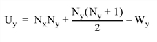

The RS_TEST function tests the hypothesis that two sample populations X and Y have the same median of distribution against the hypothesis that they differ. X and Y may be of different lengths. This type of test is often referred to as the “ Wilcoxon Rank-Sum Test” or the “ Mann-Whitney U-Test.”
The Mann-Whitney statistics for X and Y are defined as follows:

where Nx and Ny are the number of elements in X and Y , respectively, and Wx and Wy are the rank sums for X and Y , respectively. The test statistic Z, which closely follows a normal distribution for sample sizes exceeding 10 elements, is defined as follows:
This routine is written in the IDL language. Its source code can be found in the file rs_test.pro in the lib subdirectory of the IDL distribution.
Result = RS_TEST( X , Y [, UX = variable ] [, UY = variable ] )
The result is a two-element vector containing the nearly-normal test statistic Z and the one-tailed probability of obtaining a value of the absolute value of Z or greater.
An n -element integer, single-, or double-precision floating-point vector.
An m -element integer, single-, or double-precision floating-point vector.
Set this keyword to a named variable that will contain the Mann-Whitney statistic for X .
Set this keyword to a named variable that will contain the Mann-Whitney statistic for Y .
; Define two sample populations:
X = [-14, 3, 1, -16, -21, 7, -7, -13, -22, -17, -14, -8, $
7, -18, -13, -9, -22, -25, -24, -18, -13, -13, -18, -5]
Y = [-18, -9, -16, -14, -3, -9, -16, 10, -11, -3, -13, $
-21, -2, -11, -16, -12, -13, -6, -9, -7, -11, -9]
; Test the hypothesis that two sample populations, {xi, yi}, have
; the same median of distribution against the hypothesis in that
; they differ at the 0.05 significance level:
PRINT, RS_TEST(X, Y, UX = ux, UY = uy)
; Print the Mann-Whitney statistics:
PRINT, 'Mann-Whitney Statistics: Ux = ', ux, ', Uy = ', uy
IDL prints:
[1.45134, 0.0733429]
Mann-Whitney Statistics: Ux = 330.000, Uy = 198.000
The computed probability (0.0733429) is greater than the 0.05 significance level and therefore we do not reject the hypothesis that X and Y have the same median of distribution.
|
4.0 |
Introduced |
FV_TEST , KW_TEST , S_TEST , TM_TEST